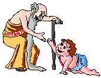

...but for what reason?
"Happy New Year!" That greeting will be said and heard for at least the first couple of weeks as a new year gets under way. But the day celebrated as New Year's Day in modern America was not always January 1.ANCIENT NEW YEARS
The celebration of the
new year is the oldest of all holidays. It was first observed in ancient
Babylon about 4000 years ago. In the years around 2000 BC, the Babylonian
New Year began with the first New Moon (actually the first visible
cresent) after the Vernal Equinox (first day of spring).
The beginning of spring is a logical time to start a new year. After all, it is the season of rebirth, of planting new crops, and of blossoming. January 1, on the other hand, has no astronomical nor agricultural significance. It is purely arbitrary.
The Babylonian new year celebration lasted for eleven days. Each day had its own particular mode of celebration, but it is safe to say that modern New Year's Eve festivities pale in comparison.
The Romans continued to observe the new year in late March, but their calendar was continually tampered with by various emperors so that the calendar soon became out of synchronization with the sun.
In order to set the calendar right, the Roman senate, in 153 BC, declared January 1 to be the beginning of the new year. But tampering continued until Julius Caesar, in 46 BC, established what has come to be known as the Julian Calendar. It again established January 1 as the new year. But in order to synchronize the calendar with the sun, Caesar had to let the previous year drag on for 445 days.
THE CHURCH'S VIEW OF NEW YEAR
CELEBRATIONS
Although in the first centuries AD the Romans
continued celebrating the new year, the early Catholic Church condemned
the festivities as paganism. But as Christianity became more widespread,
the early church began having its own religious observances concurrently
with many of the pagan celebrations, and New Year's Day was no different.
New Years is still observed as the Feast of Christ's Circumcision by some
denominations.
During the Middle Ages, the Church remained opposed to celebrating New Years. January 1 has been celebrated as a holiday by Western nations for only about the past 400 years.
NEW YEAR TRADITIONS
Other traditions of the
season include the making of New Year's resolutions. That tradition also
dates back to the early Babylonians. Popular modern resolutions might
include the promise to lose weight or quit smoking. The early Babylonian's
most popular resolution was to return borrowed farm equipment.
The Tournament of Roses Parade dates back to 1886. In that year, members of the Valley Hunt Club decorated their carriages with flowers. It celebrated the ripening of the orange crop in California.
Although the Rose Bowl football game was first played as a part of the Tournament of Roses in 1902, it was replaced by Roman chariot races the following year. In 1916, the football game returned as the sports centerpiece of the festival.
 The tradition of using
a baby to signify the new year was begun in Greece around 600 BC. It was
their tradition at that time to celebrate their god of wine, Dionysus, by
parading a baby in a basket, representing the annual rebirth of that god
as the spirit of fertility. Early Egyptians also used a baby as a symbol
of rebirth.
The tradition of using
a baby to signify the new year was begun in Greece around 600 BC. It was
their tradition at that time to celebrate their god of wine, Dionysus, by
parading a baby in a basket, representing the annual rebirth of that god
as the spirit of fertility. Early Egyptians also used a baby as a symbol
of rebirth.
Although the early Christians denounced the practice as pagan, the popularity of the baby as a symbol of rebirth forced the Church to reevaluate its position. The Church finally allowed its members to celebrate the new year with a baby, which was to symbolize the birth of the baby Jesus.
The use of an image of a baby with a New Years banner as a symbolic representation of the new year was brought to early America by the Germans. They had used the effigy since the fourteenth century.
FOR LUCK IN THE NEW YEAR
 Traditionally, it was
thought that one could affect the luck they would have throughout the
coming year by what they did or ate on the first day of the year. For that
reason, it has become common for folks to celebrate the first few minutes
of a brand new year in the company of family and friends. Parties often
last into the middle of the night after the ringing in of a new year. It
was once believed that the first visitor on New Year's Day would bring
either good luck or bad luck the rest of the year. It was particularly
lucky if that visitor happened to be a tall dark-haired man.
Traditional New Year foods are also thought to bring luck. Many cultures believe that anything in the shape of a ring is good luck, because it symbolizes "coming full circle," completing a year's cycle. For that reason, the Dutch believe that eating donuts on New Year's Day will bring good fortune.
Many parts of the U.S. celebrate the new year by consuming black-eyed peas. These legumes are typically accompanied by either hog jowls or ham. Black-eyed peas and other legumes have been considered good luck in many cultures. The hog, and thus its meat, is considered lucky because it symbolizes prosperity. Cabbage is another "good luck" vegetable that is consumed on New Year's Day by many. Cabbage leaves are also considered a sign of prosperity, being representative of paper currency. In some regions, rice is a lucky food that is eaten on New Year's Day.
AULD LANG SYNE
The song, "Auld Lang
Syne," playing in the background, is sung at the stroke of midnight in
almost every English-speaking country in the world to bring in the new
year. At least partially written by Robert Burns in the 1700's, it was
first published in 1796 after Burns' death. Early variations of the song
were sung prior to 1700 and inspired Burns to produce the modern
rendition. An old Scotch tune, "Auld Lang Syne" literally means "old long
ago," or simply, "the good old days." The lyrics can be found here.